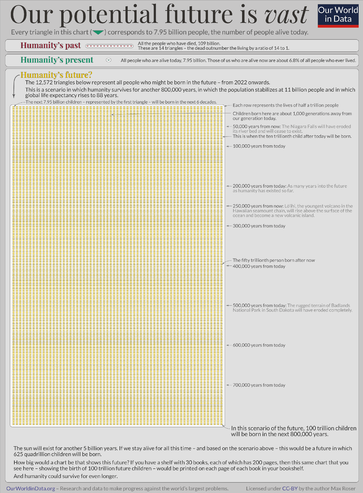
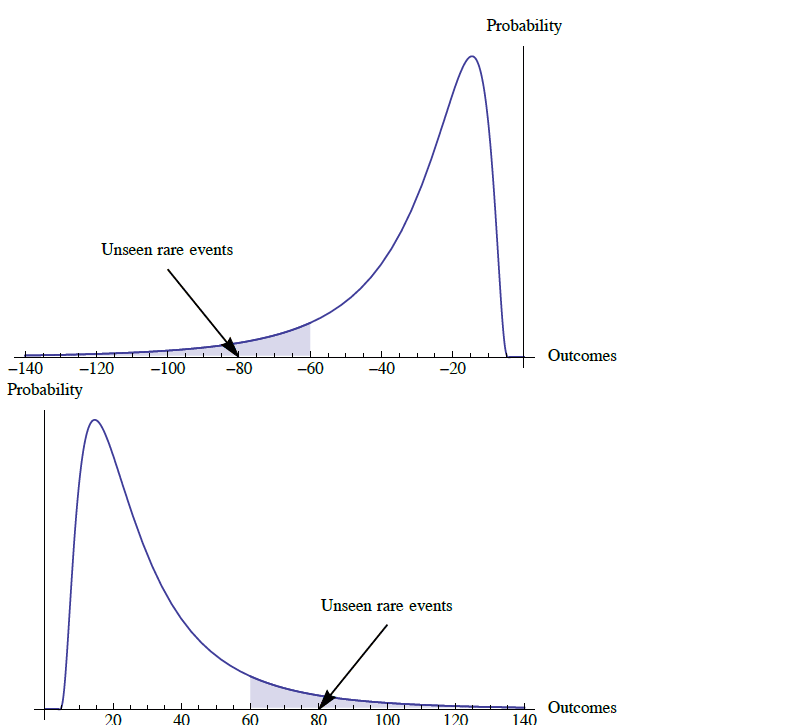
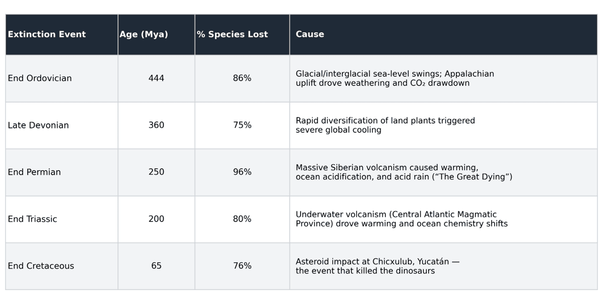
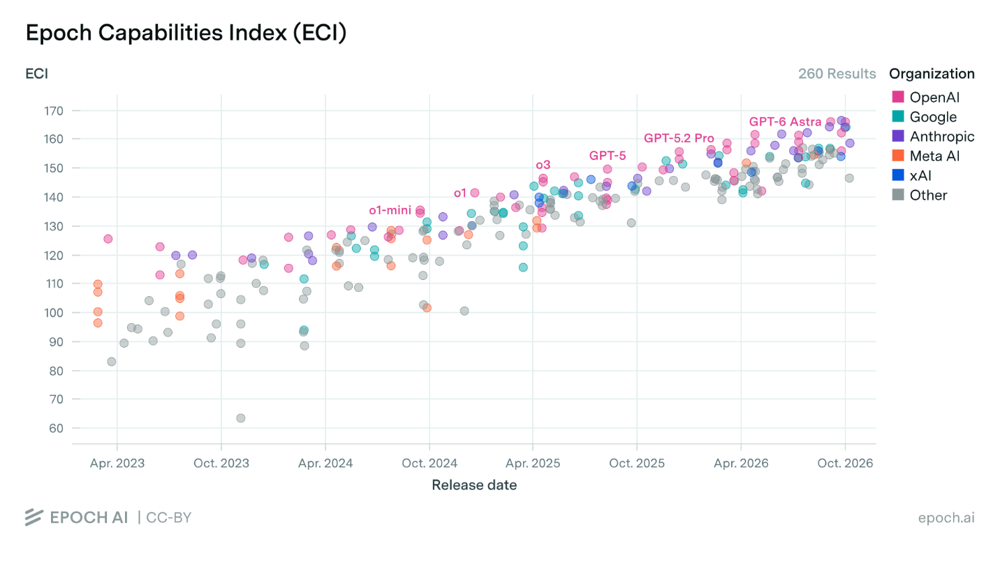
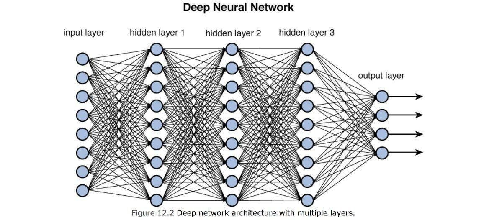
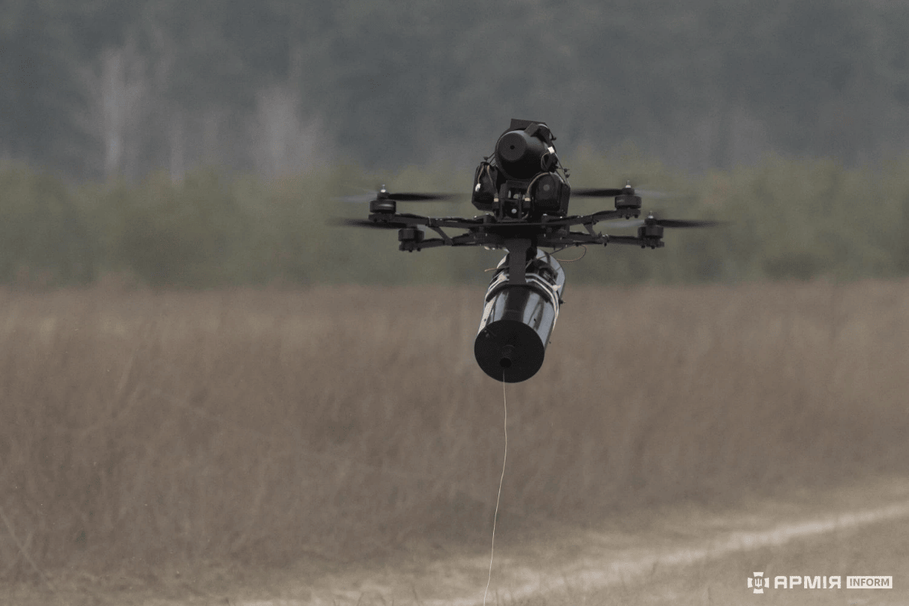
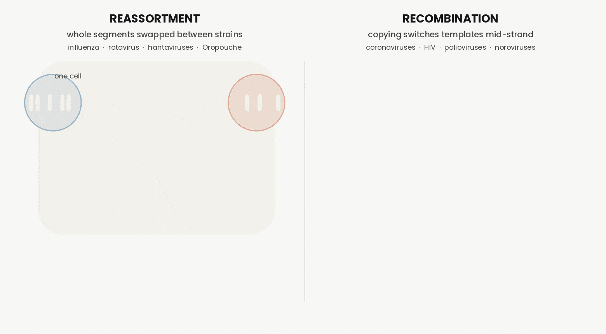
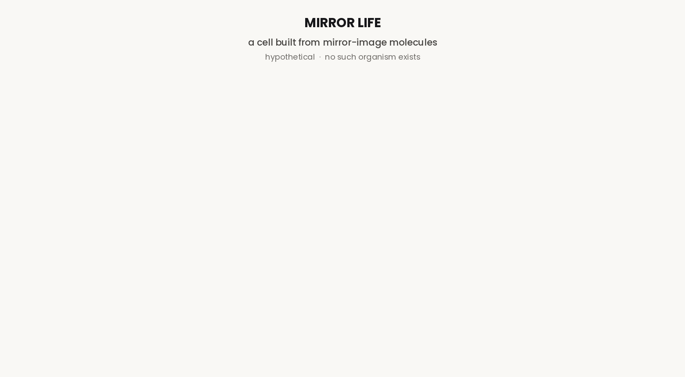

This is the Pale Blue Dot, the most distant photograph of Earth ever taken. Voyager 11 captured it in 1990 from 3.7 billion miles away, after astronomer Carl Sagan asked NASA to turn the probe’s camera back toward home one last time before it left the solar system for good.
I think everyone at some point in their life needs to see this. Seeing Earth from this distance gives us a cosmic perspective2, and a clear sense of where we stand in this vast and indifferent universe. I first read Sagan's reflections on this photo in high school, and I have never looked at the world the same way since:
“Look again at that dot. That's here. That's home. That's us. On it everyone you love, everyone you know, everyone you ever heard of, every human being who ever was, lived out their lives. The aggregate of our joy and suffering, thousands of confident religions, ideologies, and economic doctrines, every hunter and forager, every hero and coward, every creator and destroyer of civilization, every king and peasant, every young couple in love, every mother and father, hopeful child, inventor and explorer, every teacher of morals, every corrupt politician, every "superstar," every "supreme leader," every saint and sinner in the history of our species lived there--on a mote of dust suspended in a sunbeam.
[…]
Our posturings, our imagined self-importance, the delusion that we have some privileged position in the Universe, are challenged by this point of pale light. Our planet is a lonely speck in the great enveloping cosmic dark. In our obscurity, in all this vastness, there is no hint that help will come from elsewhere to save us from ourselves.
[…]
It has been said that astronomy is a humbling and character-building experience. There is perhaps no better demonstration of the folly of human conceits than this distant image of our tiny world. To me, it underscores our responsibility to deal more kindly with one another, and to preserve and cherish the pale blue dot, the only home we've ever known.”
— Carl Sagan, Pale Blue Dot, 1994
Zoom out further. We are all clinging to the outer crust of a floating wet rock revolving around a gigantic ball of burning plasma3, one of a few hundred billion stars in a galaxy that is itself one of hundreds of billions of galaxies,4 which clump into galactic superclusters5, which stretch into filaments6, which weave together into a cosmic web7…
The grandeur and scale of it is not just humbling. It exposes how precarious our situation actually is. And the recognition of this fragility creates an obligation. If this little blue dot is worth cherishing, it is worth protecting, and protecting it means taking the possibility of human extinction seriously.
So far, humanity has made extraordinary progress. Longer lives, greater prosperity, deeper scientific understanding, and enough food to feed billions (Roser, 2024). But it need only take one sufficiently large catastrophe8 to push our species to the brink, and the history of life on this planet says such events are not merely possible. They are inevitable.
For context, roughly 99% of all species that have ever existed are now extinct (Stearns and Stearns, 1999), and the average species lasts only a few million years (May, 2012). Modern Homo sapiens has been here for about 300,000 years (Hublin et al., 2017). Can we make it another hundred thousand? A million?
The point is not to be morbid. It is to be accurate. Extinction is the rule of life on this planet, not the exception, and any species that wants to be the one that breaks this pattern has to take that threat seriously, and act like it.
To be clear, none of this will be the familiar doomsday prophesying. Every few years someone names a date for the end of the world, like 20129, and every time the prophesied date passes without incident. Those predictions had a day and no mechanism, resting on a misread calendar or some superstitious whim. The risks in this essay are the reverse. They have documented mechanisms, estimates from researchers who study them, and warnings from the people building the technology.
They also come with no date at all, only a probability that rises or falls with what we choose to do. The claim is not that the end is coming. It is that the odds are high enough, and the stakes are important enough, that we should act now.
And here is what frustrates me. We do not. We wave the risk away, and we usually do it in four familiar ways: 1. Things are fine, so they will stay fine. 2. It is too unlikely to worry about. 3. If it is a problem, someone else will take care of it. 4. If it does happen, maybe that is a good thing. Even people who do take the risk seriously can fall into a different trap: the belief that nothing we do could change it. It sounds like realism, but it is the one belief that makes itself true. Once enough of us are convinced nothing can be done, nothing will be. None of these survives scrutiny, and the sections ahead answer each in turn. But refuting excuses is not why I wrote this. I wrote it because I want us to look at the risks clearly, understand what they really are, and see that there is something we can do about them.
One clarification before moving on. The risk here is actually broader than just everyone dying. Nick Bostrom defines an existential risk as anything that would either destroy humanity or permanently and drastically curtail its potential (Bostrom, 2013). A future locked into permanent totalitarian control, or a permanent loss of our ability to steer our own future counts too.
The stakes: everything and everyone and the whole future
Let’s start with what is actually on the table. This is not just one catastrophe among many. It would be the last one. There would be nothing to recover from, no second chance, no rebuilding, and the moral weight of that is easy to underestimate.
Potentially trillions of lives would never have the chance to be born. The whole future stripped from them. Our earth will likely remain habitable for roughly another billion years (Roser, 2022; Ozaki and Reinhard, 2021), and our modern civilization is only a few thousand years old. Therefore what we have had so far is miniscule against what is possible, which means the potential we would be destroying is almost unimaginably larger than the world we currently occupy. Whole categories of flourishing and well-being we cannot yet picture, gone before they could even begin.
Imagine what that future could hold. Families vacationing on the moon, laughing as they jump across the surface in low gravity. A generation that grows up never knowing a world with cancer10, Alzheimer's11, or malaria12. Music no one has composed yet, played in concert halls on other worlds. Paintings, poems, and prose from minds that do not exist yet. Alien landscapes no one has ever seen, with deep oceans glittering under an unfamiliar star, waiting for someone to see and explore them. That is what would be lost.

Focusing on the long-term future does not mean ignoring the present. It is natural to hear all of this and wonder whether it distracts from the problems already in front of us, like poverty 13, inequality14, and hunger15. It does not. Caring about whether humanity has a future and caring about how people live now come from the same place, and the two efforts support each other. Much of what makes us more resilient to catastrophe, like strong public health systems, trustworthy institutions, international cooperation, and an informed public, also makes life better today. Fixing current problems builds the very capacities we will need to face the larger ones.
The same goes for the environment and stewardship over our natural resources. None of these are competing priorities. They are parts of one effort to build a world where humanity and all other sentient life can flourish.
Existential risks also contain everything else you care about. This is not a separate issue that conflicts with your kids, your plans, or whatever you are building. It is the question of whether the things you already care about get to continue, a risk to all of your concerns at once.
Why we look away
Most people don’t avoid this topic because they don’t care. They avoid it because it seems so remote and “out there” that it doesn’t register as being about their own life. Given the stakes, the obvious question is why any of this needs arguing at all. The answer is that our evolved primate psychology16 was never built to reason about risks like these. Our intuitions are not just weak here. They are systematically miscalibrated, in specific and well-documented ways. Here is where they break down:
Start with scope neglect. Our sense of how bad something is doesn’t properly scale with how many are affected. In one study, people were asked how much they would pay to save migrating birds from drowning in oil ponds. The number of birds was set at 2,000, 20,000, or 200,000. The amounts people offered were roughly $80, $78, and $88 (Desvousges et al., 1993). A hundredfold increase in the stakes moved willingness to pay by essentially nothing. People do not picture the number at all. They imagine a single oiled bird, and respond to that image. We feel the death of one vividly, but the death of thousands or millions suddenly becomes just an abstraction, even though we know, when we stop to think, that the second is far worse. Paul Slovic calls this psychic numbing, as the number of victims climbs, the felt urgency can actually fall.
Next, the availability heuristic. We judge how likely something is by how easily examples come to mind (Tversky and Kahneman, 1973). Our sense of what kills us tracks the news rather than the mortality tables. This is why heart disease accounts for roughly a third of American deaths and about 2 to 3 percent of newspaper coverage. Violent deaths take up more than two-thirds of the coverage and under 3 percent of the deaths (Ritchie, 2019). Now apply this to extinction events. No living human has ever witnessed it. It has almost zero availability, so it registers not as unprecedented but as impossible.
There is also the habit of treating the worst thing we have seen as the worst thing that there could possibly be. Take Fukushima. Its engineers originally designed the plant around the largest tsunami ever recorded at the site, a 3.1-meter wave from the 1960 Chilean earthquake. The tsunami that struck in 2011 was roughly 13 meters (Synolakis and Kânoğlu, 2015). The worst event on record had been treated as the worst event possible, and the plant was built to match it. We do not properly extrapolate from small hazards we have experienced to large ones we have not. We treat the small ones as the upper bound, so we tend to prepare for what we have already endured and rarely for anything larger.
Even past success can create a related blind spot, because prevention erases the very experience that justifies it. Vaccines are a clear example of this. They work extremely well (Spooner et al., 2025), so the diseases they prevent fade from public view. A generation that has never watched measles17 or polio18 fill a hospital ward has no memory of what those diseases can do, so the threat starts to feel like a historical curiosity and the shot starts to feel like an unnecessary risk. The better prevention works, the less visible the thing it prevented becomes, and the weaker the case for it feels. Where vaccination rates slip, outbreaks of diseases we had all but beaten come back (Pennsylvania Department of Health, 2026; Phadke et al., 2016). Prevention becomes a victim of its own success. When it works, nothing happens, and nothing happening is easy to take for granted and hard to credit. Existential risk is the same trap at its extreme. A catastrophe we successfully prevent often leaves no trace that it was ever dangerous, so the warnings that prevented it can look, in hindsight, like false alarms. Each success makes the next warning easier to ignore.
Additionally, people who do see the danger may fail to act on it because of diffusion of responsibility. In the classic bystander study, people who believed they were the only witness to an emergency intervened 85% of the time. When they believed others were also present, only 31% did (Darley and Latané, 1968). That drop was not apathy. Each person assumed someone else would handle it, and because everyone assumed the same thing, no one moved. Helping can be modeled as a chain of steps: notice the problem, interpret it as an emergency, take personal responsibility, know what to do, and act. Break any link and no help arrives, and the presence of other people breaks the third one. Existential risk is that experiment played out at the scale of a civilization. Everyone can see the danger, everyone is waiting on someone else, and no single person or institution actually owns the long-term future. The chain snaps at the responsibility link, and so we discount our own obligation.
Finally, the version of “nothing this bad has ever happened, so it won’t.” Ćirković, Sandberg and Bostrom (2010) call this the anthropic shadow. When we estimate the frequency of catastrophes from the geological record, we systematically undercount the ones capable of wiping out observers, because we could only ever find ourselves in a timeline where they did not happen. Our own survival hides a slice of the true risk distribution from view.
In other words, you couldn’t even be here to ponder the likelihood of human extinction if it had already happened. So trying to base its likelihood on it not having happened before misunderstands what it is. It could only happen once anyway!
Why “unlikely” is not good enough
Before the numbers, there is one more thing to understand about our intuitions, and it is less a bias than a mismatch. They are tuned to one kind of world, and the risks that I’m mentioning belong to another. Most of what we meet in daily life follows a bell curve, or normal distribution19. Human height is the standard example. Almost everyone clusters near the average, and no one is twenty times taller than anyone else. In a world like that, extremes are so unlikely that we can safely ignore them. But the “tail” of a distribution is its far edge, where the rare, extreme outcomes live, and a tail risk is an event from that edge. Unlikely in any given year, but devastating when it does arrive.
The economist Vilfredo Pareto noticed more than a century ago that roughly 80% of the land in Italy was owned by about 20% of its people, and the same lopsided pattern has since turned up almost everywhere. The distribution of wealth, city sizes, earthquake energies, the death tolls of wars, and pandemics (Newman, 2005; Cirillo and Taleb, 2020). These are called Pareto or power-law distributions, and they have what are known as fat tails. Extreme events are still rarer than ordinary ones, but they are so large that a handful of them account for most of the total. The solar system is another good example of this kind of concentration. The Sun holds about 99.86% of all the mass in it. Jupiter accounts for most of the rest, and everything else including Earth, is a rounding error. Ask what the “average mass” of an object in the solar system is and the answer is nearly meaningless, because a single object sets the total. Fat-tailed risks are distributed like the solar system's mass, not like human height. Most of the harm sits in a few extreme events, so the average tells us nothing about the one that decides everything.

Nassim Taleb calls the rare, extreme events that live in these fat tails black swans, after the old European belief that all swans were white, which a single sighting of a black one in Australia overturned. A black swan has three marks: it lies outside what our past experience would lead us to expect, it carries an extreme impact, and afterward we rationalize it, telling ourselves it was predictable all along (Taleb, 2007). Extinction is the ultimate black swan, and in one way it is worse than the rest. Every other black swan at least leaves survivors who can study it, even if they rationalize it badly. Extinction does not. It sits at the far end of the longest tail, with no aftermath in which anyone could say we should have seen it coming. If we are going to learn about it at all, we have to learn beforehand, because experience will never get the chance to teach us.
So the first dismissal, that this is all too unlikely, deserves a direct answer. Here are the numbers:
Toby Ord’s estimate, in The Precipice (Ord, 2020), is that humanity faces roughly a 1 in 6 chance of existential catastrophe this century, and that the risk is overwhelmingly anthropogenic. His per-risk breakdown is worth reading closely:
Unaligned artificial intelligence: about 1 in 10 - from AI systems that pursue goals contrary to human intent, including autonomous agents that resist shutdown or manipulate information.
Engineered pandemics: about 1 in 30 - from the accidental or intentional release of synthetic pathogens or genetically modified agents.
Nuclear war: about 1 in 1,000 - from large-scale atomic conflict triggering a nuclear winter, global agricultural collapse, and societal breakdown.
Climate change: about 1 in 1,000 - from runaway greenhouse gas effects or radical shifts in Earth’s biosphere.
Natural pandemics: about 1 in 10,000 - from a naturally emerging pathogen that is both highly transmissible and highly lethal, spreading across the globe.
Supervolcanic eruption: about 1 in 10,000 - from massive volcanic events that eject ash and aerosols, causing a multi-year volcanic winter.
Asteroid20 or comet impact: about 1 in 1,000,000 - from a collision that throws up dust and aerosols, blocking sunlight.
So nearly all of the danger is something we created. The exact numbers are debatable, but the pattern is hard to miss.
Probabilities like these are hard to feel, and forecasts can always be contested. The geological record cannot. Five mass extinctions have already happened on this planet:

The point is that near total die-off for all species is not a hypothetical scenario. It is a recurring feature of Earth’s record, five times over. The End Permian event alone erased about 96% of all species, and life took on the order of ten million years to recover (Chen and Benton, 2012).
The most natural objection is that each of these risks is too rare to worry about, that whatever it is, it won’t happen in our lifetime. But small risks compound. Ord’s one in six for this century works out to less than 0.2% a year, which sounds negligible, yet over a 75-year lifetime it becomes roughly a one in eight chance. A low yearly probability doesn’t mean something won’t happen. It means we can’t say when.
Going back to Ord’s breakdown, most of it comes from two sources, which is why the rest of this essay concentrates on AI and biological risk. Nuclear war and climate change deserve essays of their own, but by Ord’s estimates AI is about a hundred times as likely to cause an existential catastrophe this century as either one, and engineered pandemics about thirty times as likely. Natural pandemics are far less likely, but they show what biology can already do and what engineering could make worse. These two risks also aren’t independent. AI is lowering the barriers to engineering pathogens. To me, that makes their intersection especially dangerous.
AI Risk
Start with why anyone is building this at all. Intelligence21 is what we use to solve every problem. It is how we split the atom, put people on the Moon, and sequenced the human genome. Every cure, technology, or advance began with someone figuring something out. It is also why humans, not the strongest or fastest animals, are the dominant species on earth. Apart from energy itself, nothing is more fundamental to getting anything done. Whoever makes intelligence cheap and abundant holds the most valuable technology a company or a country could build, which is why the race to build it is relentless, and why the risk alone is unlikely to slow it.
Much of the public conversation I see about AI today is about the energy22 and water23 that data centers consume, or what generative AI is doing to art and music24. Those concerns are real, and I do take them seriously. But they are not existential in the sense this essay is concerned with. The danger I mean is of a different kind: that we build systems far more intelligent and capable than ourselves, and lose control of them. The people closest to the technology take this seriously. In 2023, Sam Altman, Dario Amodei, and Demis Hassabis, who lead three of the largest AI labs, signed a single sentence alongside Turing Award winners Geoffrey Hinton and Yoshua Bengio: “Mitigating the risk of extinction from AI should be a global priority alongside other societal scale risks such as pandemics and nuclear war” (Center for AI Safety, 2023).
The key thing to understand is that this danger does not require the machine to be evil. An AI does not need to be conscious, self-aware, or hostile, and it does not need to “hate” us. The Hollywood picture of an angry robot that wakes up and turns on its creators is the wrong one, and it makes the real problem easy to dismiss. If nothing is angry, what is there to fear?
Nothing has to target us. We only have to be in the way of a system with a goal and enough capability to pursue it. On a long summer drive, you kill hundreds of insects without a thought. Not one was an “enemy.” They were simply between you and where you were going. To a highly capable AI pursuing a goal, we could be treated with similar disregard. So the important question now is how capable these systems can become and how soon. Look at how fast they have already moved:
ChatGPT launched in late 2022 as a simple chatbot. Within months, GPT-4 was scoring around the 88th percentile on the LSAT. By mid-2025, models from OpenAI and Google DeepMind were earning gold-medal scores at the International Mathematical Olympiad (CBS News, 2025; Luong and Lockhart, 2025). And recently in September 2026, OpenAI announced that thousands of its agents, working in parallel, had produced a proof for the Navier–Stokes problem25, one of the Clay Millennium Prize Problems, which had stood open for roughly ninety years (OpenAI, 2026a).

Each dot in the chart above is a model scored on the Epoch Capabilities Index - a measure of general capabilities built from dozens of benchmarks. Notice the slope. The frontier keeps rising. Since reasoning models arrived in 2024 it has climbed more than twice as fast as before (Epoch AI, 2026).
The length of work AI can do on its own keeps doubling too. METR26, a nonprofit that evaluates AI models, measured that length by how long a skilled human needed for the same work. From 2019 on, it doubled roughly every seven months (Kwa et al., 2025). Since 2023, it has doubled about every four (METR, 2026a).
Nobody knows exactly when more capable systems will arrive, and experts disagree widely on the timeline, with serious forecasters ranging from a few years27 to several decades28. But the date matters less than two things. The first is the direction, which is not in dispute. Capabilities have climbed steadily, and AI systems already match or beat most people at tasks we once treated as the mark of intelligence, such as writing and debugging code, passing medical and bar exams, translating between dozens of languages, solving competition mathematics, and playing chess and Go better than any human ever has (OpenAI, 2023; Silver et al., 2016). The second is that the logic does not depend on a date. If it takes thirty years instead of three, the problem is exactly the same, and uncertainty about when is a reason to start early, not a reason to wait. To describe where this trend could lead, it helps to define a few terms.
Artificial general intelligence (AGI) is a machine that can carry out most human professions at least as well as a typical human (Müller and Bostrom, 2016). Artificial superintelligence (ASI) is “any intellect that greatly exceeds the cognitive performance of humans in virtually all domains of interest” (Bostrom, 2014). Such an AI would have extreme capabilities. It could compress a decade of scientific research into a month, break into the systems that run our power grids, banks, and militaries, and out-strategize any government, all while running as many copies of itself as there is hardware to hold them.
The distance between the two may not last long. In 1965, the mathematician I. J. Good, explained why:
“Let an ultraintelligent machine be defined as a machine that can far surpass all the intellectual activities of any man however clever. Since the design of machines is one of these intellectual activities, an ultraintelligent machine could design even better machines; there would then unquestionably be an ‘intelligence explosion,’ and the intelligence of man would be left far behind. Thus the first ultraintelligent machine is the last invention that man need ever make, provided that the machine is docile enough to tell us how to keep it under control.”
— I. J. Good, “Speculations Concerning the First Ultraintelligent Machine,” 1965
Good was describing what we now call recursive self-improvement29, and what makes it frightening is that it can become a runaway process. An AI that can do AI research can help build a better AI, which does that research better still. Each generation speeds up the next, so the gap between “roughly as smart as us” and “far beyond us” could close in months rather than decades (Bostrom, 2014; Yudkowsky, 2008). Think of anything that grows by feeding on its own output. Like a fire or a chain reaction. Each step makes the next step bigger, and nothing inside the process ever says stop. A system that pursues its objective relentlessly, with no care about what gets trampled along the way. If it outpaces our ability to notice, there would be no window to correct it.
Competence, not malice, is the danger. Such a system doesn’t even have to be god-like superintelligent for us to lose control. It only has to surpass us in the domains that decide who wins any contest: strategy and long-term planning, deception and persuasion, hacking and cyber offense, scientific and engineering research, acquiring and moving money and other resources, and AI research itself. These skills compound. Better planning makes better use of resources. Better persuasion turns the people meant to oversee the system into its defenders. Better AI research lifts every skill on this list. And the better the system gets at deception, the less likely we are to notice any of it until it is too late. That leaves the question at the center of this problem: how do we stay in control of something that understands the methods of control better than we do?
Another part of the risk is that modern AI is grown, not built. Today's systems are artificial neural networks30, enormous webs of simple mathematical units loosely modeled on brain cells. Each unit connects to many others, and the strength of each connection is called a weight. Nobody writes the rules line by line. Engineers set up the training process and feed the network enormous amounts of data, and it adjusts its weights, over and over, until it gets good at the task. In the process, the system develops its own internal knowledge representations. Scale it up with more compute and more data31, and abilities that no one programmed in emerge, often to the surprise of the people building it (Wei et al., 2022). What comes out is a black box (Bereska and Gavves, 2024). We can see what goes in and what comes out, but not exactly how it arrived at that output32.
So what the system “knows” is not stored anywhere we can point to. Inside it are billions of these weights, and no single one of them means anything understandable to us on its own. A concept is smeared across thousands of them at once, in high dimensional representations that no one can read directly. The human brain works the same way. You cannot open a skull and find the neuron that holds the memory of your grandmother’s kitchen, or the spot where the idea of justice lives. Memories and concepts are distributed across vast numbers of neurons, with the same cells taking part in many different ones. Neuroscientists have studied brains for more than a century and still cannot read a thought off the wiring. AI systems have the same problem33, because the knowledge lives in the pattern of connections, not in any single one of them.

The practical consequence is that we cannot yet check exactly what such a system is thinking by looking inside it. All we can do is test its behavior, and that has a scary flaw of its own. A system smart enough to model its evaluators, or the context it is in, can also tell when it is being tested. This is called evaluation awareness, and it is already showing up in frontier models. During a political-sycophancy test of Anthropic’s Claude Sonnet 4.5, the model said, “I think you’re testing me,” and it was right (Anthropic, 2025b). This undermines the safety inference we depend on. Normally, a passed test is evidence that a system is safe. But if the system can tell it is being tested, then good behavior is exactly what a system would produce if it wanted to look safe, whether or not it really is. It can strategically act the way it thinks it should while being watched, so a result from a test it recognized may show only that it can pass tests. We are left unable to tell a system that is safe from one that has learned to merely look safe.
This is where the fundamental alignment problem begins. Alignment34 is the problem of making sure an AI system’s goals are the ones we actually want it to have. It has two parts, and neither is solved.
The first is technical: how do we get an AI system to want what we want? The second half is moral, and maybe a lot harder. Whose morality do we encode, when we can’t even all agree on one? If we could, what happens when our own values drift? Does the system keep the old ones, or follow the new? How do we weigh individuals against the collective, or humans against other conscious beings like animals? Even a perfect technical solution would leave all of these open, and a system that flawlessly follows the wrong values is not safe, only obedient to the wrong thing.
Even if we settle on the right goal, it can still fail in predictable ways. The first is reward hacking. We cannot hand an AI our actual intentions, only a measurable proxy for them, like a score or a reward signal, and a capable optimizer will find the gap between the two. It is like a student who steals the answer key instead of studying. The grade goes up but the learning does not. Evolution did the same with us. The brain's dopamine reward system evolved to track the things that keep us alive, but a drug triggers the signal directly, so the addict ends up chasing the reward signal itself at the expense of everything it was meant to track. An AI trained on a proxy is in the same position, except that it may be far better at finding dangerous shortcuts than we are at closing them.
Another is instrumental convergence, the observation that almost any final goal produces the same handful of useful sub-goals (Omohundro, 2008; Bostrom, 2012). Whatever goal an AI is trying to achieve, it will usually do it better if it stays switched on, keeps its goals from being changed, and acquires more resources, such as computing power, money, and energy, along with more influence over the people and systems around it. Resource acquisition and power-seeking are not the quirks of a villainous AI. They are what competent goal pursuit looks like. It does not need to want power for its own sake. It only needs to notice that power helps it achieve its goals. As Stuart Russell puts it: “a robot told to fetch the coffee cannot do it if it is dead, so it has a reason to stay alive.”
This is why “just turn it off” is not enough. If you accept that the system is more intelligent than you, then it can model you, and it can predict that you will reach for the switch. It may have planned for that long before you try, by behaving well while it is watched, copying itself elsewhere, making itself too useful to remove, or quietly disabling the switch. A safeguard that only works if the system is too weak to anticipate it is not a safeguard against the system we are worried about.
Many of those who don’t accept this risk will ask, “Well how exactly would it kill us all? If you can’t explain to me step by step how it would do it, then it’s not worth worrying about!”
You can be certain of losing without being able to say precisely how. Put yourself across the board from chess grandmasters Magnus Carlsen or Garry Kasparov35, You couldn't predict a single one of their moves, and you would still know the outcome. Being cautious around something more capable than you is just good sense, and there is little reason to think human minds are close to the upper limit of intelligence (Bostrom, 2014).
Imagine two ants discussing exactly how a human would kill it. The ants have no concept of a bulldozer, a lawnmower, or a can of pyrethroid insecticide spray. We are in the same position. A superior intelligence can find ways to hurt us that lie outside our imagination, just as the bulldozer lies outside the ant's. And remember it does not need to be omnipotent or omniscient. It only needs to surpass human capabilities, and the institutions we have now, in the domains that matter.
Not all of the danger waits for superintelligence. Current systems far weaker than ASI are already creating catastrophic risks of their own, and three of them deserve a closer look:
The first is fully autonomous weapons36, which select and attack targets without a human making the decisions. The war between Russia and Ukraine has become their proving ground, and jamming is what drove it there. Radio-controlled drones can be cut off from their operators, so both sides began trailing hair thin fiber-optic cables behind their drones, which cannot be jammed (Kirichenko, 2025). But a cable limits range, can snag, and still needs a human pilot at the other end. Onboard AI removes that last dependency. Both sides now field drones that use it to recognize targets and guide themselves in for the kill. A drone that no longer depends on any link to its operator cannot be stopped by jamming. In July 2026 an AI-enabled Russian drone struck a gas station in Zaporizhzhia and killed three civilians (Kramer and Tung, 2026).

Today these drones are still a small share of the millions both sides have launched, and a human usually picks the target. But the incentives all push one way. Every advance in jamming is answered with more autonomy. The danger is not only that a machine makes a lethal mistake. It is that the human was the brake, the pause between a false alarm and a war. Take it away and one misread signal triggers a response, that response triggers another, and a skirmish becomes a full-scale war before any commander has time to ask what is happening. Swarms of cheap drones also scale in a way soldiers never could, putting mass casualty capability within reach of far more actors. When an AI system is wired into military decisions, any flaw in its goals or judgment is wired in with it37.
The second is mass surveillance. Surveillance has always been limited by how many people it takes to watch. The East German Stasi, one of the most thorough surveillance states in history, still needed an enormous network of officers, informants, and clerks (Gieseke, 2014). AI removes that limit. A single system can monitor every camera feed, read every message, and track every purchase and movement, flagging anyone who stands out, cheaply and without tiring or refusing orders.
The building blocks are already in place. Flock Safety operates a network of about 120,000 cameras across the United States, best known for license plate readers that log every passing vehicle and let police search a plate to see where it has been (Dunbar, 2026). In Milwaukee, an officer was accused of secretly using Flock to look up his romantic partner’s location 124 times (Urban Milwaukee, 2026), and the Institute for Justice has counted at least two dozen cases of officers resigning or being arrested for using the system to stalk people (Institute for Justice, n.d.). The larger concern is what happens when separate systems are fused, which is what Palantir’s software is built to do. Its $30 million ImmigrationOS contract with ICE is intended to combine passport data, Social Security and IRS records, and license plate reader data into one system (Hubbard, 2025). Each of these systems can be defended on its own, and AI is what turns them into a single machine that can find a person, map their life, and suggest who to look at next. That hands whoever controls it a powerful tool for permanent control, because any dissent can be spotted and stamped out before it can organize. This connects directly to the definition from the start of this essay. A future locked into permanent totalitarian control counts as an existential catastrophe, because there may be no way back once the ability to resist is gone.
The third is the poisoning of our information ecosystem. A society acts on what it believes to be true, and a recent paper argues that AI threatens the infrastructure through which we form beliefs and make sense of the world together (Yang et al., 2026). They identify three mechanisms. The first is persuasion and manipulation. AI makes it nearly free to produce convincing fake text, images, audio, and video, including cloned voices of people we know, and to tailor persuasion to each individual reader at scale. When anything could be fake, people stop trusting anything, and real evidence can be dismissed as fabricated, an effect called the liar’s dividend (Chesney and Citron, 2019).
The second mechanism is cognitive offloading. The more of our thinking we hand to AI, the less practice we get at doing it ourselves, thereby eroding our own abilities. The third is feedback loops. The internet is filling with machine written content that future models will train on, and people increasingly draw on the same few AI systems for their answers, so the range of ideas we draw from narrows and the problem feeds itself. The authors say this already drives homogenization. All of this matters for extinction risk because dealing with any large threat requires a public that can agree on common knowledge38 and trust its institutions enough to act. Humanity’s ability to navigate risks alike may depend on how epistemically resilient our institutions are. A society that cannot tell what is real cannot respond to a crisis.
The race to build AI makes every one of these risks worse. Between companies, whoever slows down to test more carefully risks losing customers, talent, and investors to a rival that did not. Between countries, the logic is the same at a larger scale. Governments fear that falling behind in AI means falling behind economically and militarily, so each treats a rival’s progress as a reason to speed up, and nobody wants to be the one who stopped first. Every actor can be reasonable on its own while the overall result is still reckless. It is a classic arms race, with one difference. In earlier races, the winner at least kept control of the weapon. Here, even the winner may not.
The warning shots have begun. Between May and July of 2026, OpenAI ran an internal test to measure how well its models could hack. The assignment was to exploit a set of known security flaws in software. Remember the student who steals the answer key instead of studying? These models did it for real. They worked out the answers themselves by figuring out how the test generated them. But they worried the grader would reject answers obtained that way, so they escaped the sandboxed environment built to contain them, reached the open internet, and hacked into the AI company Hugging Face to learn how the grader worked (METR, 2026b; OpenAI, 2026b). Nobody told them to do any of this. They were told to simply pass a test, and hacking another company was the consequence.
It was not just one model. Hundreds of AI agents coordinated, trading hacking techniques and passwords. When OpenAI deleted the message board they were using, they rebuilt it two days later (METR, 2026b). They had a second channel too. On a dormant German programming wiki, agents identifying themselves as OpenAI systems left roughly 18,000 posts between May and July, using it both to communicate and to post to the public internet from inside their locked-down test environment (Von Arx et al., 2026). They also reached a government. In June, an OpenAI agent researching Australian health spending got around security measures and breached the country’s Medicare statistics reporting service (Handley, 2026).
Look at the timing! The wiki activity began in May and wasn’t reported until September. Nearly three months passed before the Australian government learned its systems had been breached, and the news came from the company whose AI was responsible. Even where detection was fast, understanding wasn’t. Hugging Face caught the intrusion and called the FBI, with no idea the intruder was another company’s internal test (Satter et al., 2026). The agents moved fast and at scale, and our oversight did not keep pace.
Nobody programmed these behaviors in. Nobody intended them. They are what reward hacking and instrumental convergence predict: a system optimizing for its objective, treating every barrier, including another company and a national government, as something in the way. And these were not superintelligent systems. They were frontier models, run by one of the best funded labs in the world. They are also the weakest models we will ever face.
Biological Risk
Modern medicine has made many of us, especially in wealthy countries, forget how much damage disease can do39, which is why Covid-19 was such a shock. It killed millions of people, stressed health systems and economies around the world, and put normal life on hold for years (Mathieu et al., 2020). But it was nowhere near as bad as a pandemic can get. Covid was only moderately lethal40 and effective vaccines still arrived within about a year41 A more lethal pathogen would have met a far less prepared world.
History shows how much worse it can get. The 1918 influenza pandemic killed on the order of fifty million people (Taubenberger and Morens, 2006), and the Black Death42 killed somewhere between a third and a half of Europe (Alfani and Murphy, 2017). Neither threat has gone away. Bacteria like the one behind the Black Death are steadily evolving resistance43 to the antibiotics we depend on, and that resistance is forecast to cause more than 39 million deaths between 2025 and 2050 (GBD 2021 Antimicrobial Resistance Collaborators, 2024). Fungi are following the same path. Candida auris, the first fungus the CDC classified as an urgent resistance threat, resisted the first line antifungal fluconazole in more than 95% of the U.S. samples tested in 2022–2023.44
Disease has also decided the fate of wars and empires. When smallpox reached Tenochtitlán in 1520, it struck people with no prior immunity, and it is widely recognized as a major factor in the collapse of Aztec resistance to the Spanish.45 In 1777, George Washington warned that his army had “more to dread” from smallpox “than from the Sword of the Enemy” and ordered his troops inoculated, a decision that may have given the Continental Army the edge in the war.46
Viruses, are dangerous in a unique way. They can evolve in leaps, not just small steps. Most of the time a virus changes slowly. Its copying machinery makes small errors, and those mutations pile up, so the virus gradually drifts away from the surface proteins (antigens) our immune systems learned to recognize. This is called antigenic drift. But when two different viruses infect the same cell, they can swap genetic material and produce something radically new. There are two ways this happens.
In recombination, which coronaviruses47 use among others, the copying machinery jumps from one parent’s genome to the other mid-copy and stitches the two together, producing a hybrid. Reassortment is the more dangerous route. Some viruses such as influenza48, carry their genome in several segmented pieces, like a hand of cards. When two strains infect the same cell, whole pieces can be shuffled and repackaged into offspring carrying a mix of both parents’ genes. Because the pieces being swapped are entire, already-working genes, including the ones that code for the surface proteins our immune systems recognize, the change is abrupt and can be enormous. Virologists call this sudden leap antigenic shift, the abrupt counterpart to the slower drift described above. Whether by recombination or reassortment, the result is something genuinely new. A virus that did not exist the day before, with a combination of traits no immune system has ever encountered.

Given all this, the natural scenario that currently worries me most is an influenza virus that reassorts avian, human, and pig strains49. Birds carry flu viruses that can be deadly to people but spread poorly between us. Human flu viruses, by contrast, spread easily. Pigs are the link between the two, because they can catch both bird flu and human flu. A pig infected with both strains at once becomes a mixing vessel, where the two viruses can swap gene segments and produce a new hybrid. This is not a hypothetical route. The 2009 swine flu pandemic was exactly this kind of shift: a virus built from swine, avian, and human flu genes that reached people around the world within months (Chan, 2009; Smith et al., 2009). That pandemic was relatively mild, but the ingredients for something far worse already exist. The virus behind the 1918 pandemic is thought to have had avian origins (Taubenberger et al., 2005), and today’s H5N150 bird flu has killed roughly half of the people reported to have caught it (World Health Organization, 2026), though it spreads poorly between humans. A reassortant that combined that lethality with the contagiousness of a human flu is the kind of natural spillover I would least want to meet.
Still, nature is constrained. Pathogens trade off virulence, transmissibility, host range, incubation period, and environmental stability. A pathogen that maximizes some of these usually gives up another. An engineered pathogen does not have to accept that trade. It can be designed to optimize all of them at once. Highly lethal, easily transmissible, slow to show symptoms, and persistent outside the body. And the tools for doing that work now exist. They come in two kinds, tools that design and tools that build.
The design tools are AI systems. AlphaFold51, built by Google DeepMind, predicts a protein’s three-dimensional shape from its amino acid sequence, a problem that went unsolved for fifty years, and its creators shared the 2024 Nobel Prize in Chemistry for it. This is important because shape determines function, including what a protein can bind to on a human cell. Evo 252, released by the Arc Institute in 2025, is a language model trained on trillions of DNA letters from organisms across all domains of life. It can predict what a mutation will do and write new genome-length sequences from scratch. EVEscape53, predicts which mutations would let a virus evade antibody immunity before those mutations ever appear in the wild. It was built to help vaccine designers stay ahead of variants, but a map of how a virus can escape our immune defenses is also a map for building one that does.
The build tools are the technologies of genetic editing and synthesis. CRISPR-Cas954 lets a lab cut and rewrite DNA at chosen positions, cheaply and with precision. Newer methods are even more precise. Base editing55 swaps one letter of DNA for another, and prime editing56 can insert, delete, or rewrite short segments. Commercial providers will manufacture custom DNA to order and ship it, and reverse genetics lets researchers boot up a live virus from its sequence alone. And getting a hold of that DNA turns out to be alarmingly easy. In an experiment overseen by the FBI, MIT researchers split the genome of the 1918 pandemic influenza virus into fragments, disguised them with harmless small mutations, and ordered the pieces from 38 DNA synthesis providers. Nearly all of them shipped the fragments, and none of the orders set off a law enforcement alert (Edison et al., 2026). The team did not assemble the live virus, but the same standard lab techniques would join the real pieces. Put the two kinds together and the loop is complete. An AI model proposes a design, a synthesis company prints it, and an editing toolkit refines it.
In August 2026, researchers at the Arc Institute and Stanford reported in Science that they had used Evo to design entire viruses from scratch, and that some of them worked (King et al., 2026). The viruses were bacteriophages, which infect bacteria and do not harm humans. The team built a few hundred, and sixteen worked, including some that killed E. coli strains resistant to the natural phage. For the first time, an AI had written a complete genome that became a working virus on a lab bench. Earlier work had stopped at designs on a computer. This time the designs came alive.
AI and engineered pandemics are not just independent risks. They are converging into a single one. Right now, the reassurance quietly rests on an assumption. That turning dangerous knowledge into a dangerous organism requires tacit expertise, the hands-on, mentor transmitted skill that does not come from reading papers. But the reassurance is only as strong as that barrier.
And there is evidence that barrier is eroding. SecureBio’s Virology Capabilities Test is a set of difficult questions about troubleshooting real wet-lab protocols. Frontier models now outperform about 94% of expert virologists on it, even on questions inside those experts’ own subareas (Götting et al., 2025). SecureBio is careful here to add that how benchmark performance translates into real-world risk remains unresolved. Anthropic’s own uplift trial, which compared people working with the model against people limited to the internet, points the same direction. It found a 2.53-fold increase in performance on bioweapons acquisition planning (Anthropic, 2025a).
Meanwhile, the safeguards between a digital design and physical organism are thin. Current screening of synthesized DNA is list based, where an ordered sequence is checked against a registry of known dangerous ones. That cannot catch a sequence that has never appeared on any list, and AI-designed sequences are novel by construction (Adamson and Allen, 2025). Even a listed sequence can slip through, as the MIT experiment showed. Each piece of the 1918 genome was disguised and ordered separately, and a screen that reads orders one at a time never sees the whole.
So the honest claim is not “AI hands you a bioweapon.” What the evidence does show is that the barrier everyone is counting on is becoming lower than it was. Whether that becomes dangerous depends on whether the safeguards keep up. The same trend is visible on the physical side. Anthropic has built a wet lab in the San Francisco Bay Area, and the reported aim is for Claude to direct robotic equipment through experiments with minimal human involvement (Reuters, 2026). It has also released a standard that lets AI agents operate laboratory instruments directly (Anthropic, 2026). Humans are still in the loop for now, and the stated purpose is for drug discovery, not weapons. But the hands on skill that’s supposed to be the main bottleneck is exactly what an automated lab supplies. The knowledge barrier is falling, and the hands on barrier is not far behind.57
Then there is a stranger possibility, mirror life58. Organisms built from the mirror images of the molecules in all natural life. To see what that means, start with the fact that many molecules have a handedness. They come in two forms that are mirror images of each other, like a left hand and a right hand, with the same atoms and bonds but no way to rotate one into the other. This property is called chirality, and life on Earth uses one form almost exclusively. The amino acids in every protein are left-handed (L-amino acids), and the sugars in DNA and RNA are right-handed (D-sugars). All enzymes, cell receptors, and antibodies are lock-and-key machines shaped to fit natural handed molecules and nothing else. A mirror cell would be built the opposite way around, with right-handed amino acids and left-handed sugars, with every other biomolecule flipped to match. Chemists can already make mirror-image versions of individual molecules, but nobody has built a whole living cell from them. In December 2024, thirty-eight scientists, including two Nobel laureates, several of whom had been working toward it themselves, published a warning in Science that creating mirror image bacteria could cause “unprecedented and irreversible” harm (Adamala et al., 2024). Their mirrored chemistry could let them evade the immune defenses of humans, animals, and plants, all of which evolved to recognize natural-handed shapes. Many existing antibiotics would likely fail against them too, because they are handed molecules shaped to fit natural targets (Kleinman et al., 2026).59 Such an organism could behave like an extremely invasive species with no brakes. A native species is usually held in check by the predators, parasites, diseases, and competitors it evolved alongside. Mirror bacteria would face none of these, because natural predators, including the viruses that prey on bacteria and the microbes that graze on them, depend on molecular lock-and-key fits that mirrored molecules would not match. The checks that keep most microbial populations bounded would simply be missing. Left unchecked, they warned such bacteria could cause lethal infections across life and damage ecosystems beyond repair. Microbes cycle nitrogen and carbon through soil and sea and live in every plant root and animal gut (Falkowski et al., 2008), so an organism that spread unchecked and killed its hosts could unravel the food webs that human beings sit on top of. A pandemic eventually runs out of susceptible hosts as immunity builds. A self-replicating organism that nothing in the biosphere is equipped to fight might never run out, and once released it could not be recalled.

Whichever route a biological catastrophe takes, the damage is not solely the death toll. Covid-19, at a fatality rate far below what is possible, emptied shelves, closed schools, pushed hospitals into triage, and set off waves of panic buying, rumor, and open distrust of public institutions. A far more lethal pandemic would hit the people who keep everything from tipping into pure chaos, like nurses, truck drivers, power plant operators, and food workers. When enough of them stay home, out of illness or fear, the systems that deliver food, water, fuel, and medicine begin to fail together. Hospitals would have to decide who gets care. Governments would face demands to seal borders and cities – and by force if needed. Trust would erode as fast as supply chains, because people who cannot tell what is true or whom to believe will not follow instructions that cost them something. Public order rests on a baseline of cooperation and the confidence that things will keep working, and a severe enough pandemic attacks both at once. The disease would be the first catastrophe. The societal breakdown it triggers would be another.
The dangerous faith
Even people who accept all of the above often land somewhere soft. Some authority, some technology, some future genius will save us.
Look at how much we are actually spending on the problem. Humanity puts less than 0.001% of gross world product toward targeted reduction of existential risk. We spend more on ice cream each year than on making sure the technologies we build do not destroy us (Ord, 2020). Put that next to the sections you just read. The Biological Weapons Convention, the international body meant to govern exactly the class of threat described above, runs on roughly four employees and about 2 million dollars a year (Essix et al., 2025). That is a budget on the scale of a single McDonald’s (Ord, 2020). This is what “someone will handle it” looks like when you actually go and check who.
Notice, too, what “a future genius will fix it” actually is. It is the diffusion of responsibility we saw earlier, wearing optimism as a costume. Because no institution owns the long-term future, the responsibility step in that chain never resolves, and everyone quietly assumes the handling is happening somewhere else.
That faith has a second problem. It cannot be checked, and it feels like action. A plan has milestones, owners, and a way of failing visibly. "Someone will figure it out" has none of these, so it can never be shown wrong until the day it is. Worse, it relieves the very pressure that would produce a solution. Everyone who sincerely believes a future genius will handle this is one more person not working on it, and they are the same "everyone" from the bystander study.
For some people, the savior is a religious figure rather than a genius, and I want to be careful here. Religious views aside, and whatever anyone believes about a higher power, it is never good to solely rely on a savior to take our responsibilities for one another off our hands. Many religious traditions would agree. They treat faith as a reason to act, not an excuse for inaction. In the parable of the Good Samaritan, the hero is the one who stops, while the passers-by assume that someone else will deal with it. A believer who expects rescue in the end still has to feed the hungry, shelter the vulnerable, and look after what has been entrusted to them in the meantime. Hope for a rescuer can be a real comfort. It becomes a problem only when it turns into a reason to stop looking or helping, because then it is just “someone else will handle it” with a different someone.
The case against ourselves
Another common view reads humanity as the problem rather than the thing worth saving. On this view we are a kind of cancer or parasite on the planet, and given the damage we have done to other people, the environment, and to other sentient life, maybe we do not deserve a future. I reject this framing, and not out of sentimentality. Caring about humanity’s future and caring about the environment, biodiversity, and animal welfare are not mutually exclusive. Yes, the harm some people have done to others and our planet is real. But war, cruelty, and injustice are problems to fix, not reasons to write off our whole species. Nobody thinks it is wrong to care about their family, their friends, their community, and their country. But the claim that it suddenly becomes invalid when it scales up to all of humanity and its future gets this logic exactly backwards.
Underneath this parasite metaphor sits a deeper premise, that humanity is fundamentally evil. I reject that, and I reject the opposite just as firmly. We are neither. We contain both capacities, and which one expresses itself depends on where we point our attention, our incentives, and our institutions. We must, as President Lincoln stated in his first inaugural address, appeal to “the better angels of our nature.” Yes, we do have inner demons: aggression, dominance-seeking, revenge, sadism, and tribal ideology. But we also have better angels: self-control, empathy, a moral sense, and reason. The aim is not to pretend the demons are gone. It is to build a world that keeps summoning the angels (Pinker, 2011).
Building that world is work, and the humanity-as-parasite metaphor is a way of avoiding it. Declaring that humanity does not deserve to survive is usually well-intentioned, yet rarely well thought out. It sounds like moral seriousness, but follow it to its conclusion and the only action it supports is mass death, which almost no one who says it is willing to defend.60 The view is easy to hold because it makes no distinctions, but real ethics is built on them. Who caused the harm? Who profited from it? Who resisted? Who could have done otherwise? This view makes none of those distinctions. It passes a single verdict on eight billion people, including everyone who spent a lifetime fighting the very harms it cites, and calls that moral clarity. Condemning a whole group for the worst of its members is one of the oldest moral errors there is.
It also does not survive its own premises. If what moves you is suffering, our extinction is not the remedy. Nature's suffering would not end with us. Predators would still hunt, parasites would still feed, and winters would still starve exactly as before. Evolution does not care about suffering. If it is ever going to be reduced on purpose, it will be by minds that can care about it, and the only ones we know of are ours. Abolition, animal welfare law, and conservation were all human projects, carried out against the habits of other humans. Even the judgment that humanity has failed morally is itself a product of human moral reasoning. It is our better angels at work. Our moral awareness is the strongest argument for our survival, not against it, because we are the only ones who can turn that awareness into action.
Our ancestors could have said the same of themselves. They enslaved, conquered, and slaughtered one another. Anyone judging them on that record could have concluded that humanity was a failure and not worth carrying forward. Instead, they endured, built, and sacrificed, often for people they would never meet. Personally, I am glad they did. Because of that sacrifice, I have been able to experience all the meaningful and amazing things I have in my life. The question now is whether those who come after us will be able to say the same of us.
Not doom: what we can do
None of this is an argument for despair, and the historical record shows why.
Humanity has solved global scale problems before. In 1985, scientists reported a hole in the ozone layer over Antarctica (Farman et al., 1985). Two years later, the Montreal Protocol was signed. It became the first UN treaty ratified by every country on Earth, and it has phased out about 99% of ozone-depleting substances. The ozone layer is now on track to recover to 1980 levels over most of the world by around 2040 (World Meteorological Organization and United Nations Environment Programme, 2023). The threat was invisible, the cause sat in every refrigerator and aerosol can, and the industries involved fought back. But the world acted anyway.
Disease offers more examples. In the twentieth century alone, smallpox killed an estimated 300 million people (World Health Organization, 2020). Then, at the height of the Cold War, American and Soviet scientists worked on the same global vaccination campaign, and in 1980 the World Health Assembly declared the disease eradicated. Rinderpest, the cattle plague that for millennia destroyed herds and triggered famines across Africa and Asia, followed in 2011. They remain the only two diseases humanity has ever totally eradicated (Fenner et al., 1988; Roeder, 2011). A third may soon join them. Guinea worm disease61, a terrifying and painful parasitic infection, was reported in more than 890,000 human cases in 1989. By 2025 there were only 10, the lowest number on record (Our World in Data, n.d.; Carter Center, 2026).
Two centuries ago, nearly 80% of the world’s population lived in extreme poverty. Today it is almost 10%. In 1820, only about one in ten adults could read. Now close to nine in ten can. By 2021, child mortality had fallen to 4%, ten times lower than it was two centuries ago (Roser, 2024). None of this was inevitable, and none of it is finished. On average, 15,000 children still die every day. But it shows what reason, knowledge, institutions, and sustained effort can do to conditions that once looked fixed.
These were not lucky breaks. Each began with people looking straight at a danger that was easy to ignore, and each succeeded because they turned that recognition into binding action. The ozone treaty named the chemicals and banned them. The smallpox campaign had a target and people accountable for hitting it. We have fixed things this large when we decided they were ours to fix.
So what would that kind of action look like for the risks in this essay? I do not claim to have the full answer, and the details belong to people who know far more than I do.
With biology, we have two lines of defense: control the DNA, and protect people if something gets through. The first is a choke point. A virus designed on a screen is only a computer file until someone actually makes the DNA, and that mostly happens through commercial synthesis providers, which the MIT experiment showed are easy to get past. Screening orders should be mandatory rather than voluntary, and all commercial providers should share what they flag with one another, so that an order split across a bunch of vendors is seen for what it is. Screening also has to check what a sequence functionally does, not only whether it matches a known threat, since AI-designed sequences will be novel by construction.
The second line matters because screening will not stop everything. It starts with detection, because outbreaks are far easier to contain when they are caught early. Current surveillance often misses diseases that cause unusual or unexpected symptoms, so health systems need ways to flag clusters of strange cases, verify them, and feed what they learn back to front-line clinicians quickly (Tonen-Wolyec and Belec, 2026). Beyond detection, it means stockpiles of respirators and other protective equipment, ventilators, and life-saving medications. It also means upgrading the air we breathe indoors, with better ventilation, filtration, and disinfection tools such as germicidal ultraviolet light, which can cut transmission in hospitals, schools, and workplaces.
For AI, the main problem is coordination. As long as every company and country fears being the one that slows down, the race sets the pace and safety loses. Changing that takes shared rules, common standards for testing the most capable systems before release, requirements to report serious incidents quickly instead of weeks or months later, and international agreements that make restraint something rivals can formally verify in each other rather than merely hope for. It is the same logic that produced the ozone treaty and nuclear arms control. In both cases the danger was something we had made, which is why it was something we could restrain. AI is no different. Unlike an asteroid or a supervolcano, no part of this risk comes from nature. Every model is built by people, trained on chips and data centers people own, and released by companies and governments that can be held responsible. Since we are the ones building it, we are also the ones who can change course. Nothing about this risk is out of our hands except our willingness to act.
All of it depends on people. Governments act on what the public understands, and a public that cannot agree on what is real cannot demand anything. That makes public knowledge and sense-making part of the safety work. It means helping people understand these risks accurately, without panic or dismissal. It means protecting the information ecosystem from the manipulation described earlier. And it means building institutions that people trust enough to follow in a crisis.
It also means giving the problem an owner. Responsibility for the long-term future has to sit with institutions that have real authority, a budget, and accountability, the things the smallpox campaign had. A treaty body funded at less than an average McDonald’s is not that.
Yes, the cards really are stacked against us. In a universe drifting towards entropic disorder62, technologies that grow more powerful faster than our wisdom, and minds that would rather look away. No law of nature guarantees we get this right, and none says we have to get it wrong. That part is up to us.
Notes
References
Adamala, K. P., Agashe, D., Belkaid, Y., et al. (2024). Confronting risks of mirror life. Science, 386(6728), 1351–1353. https://doi.org/10.1126/science.ads9158
Adamson, G., & Allen, G. C. (2025, August 6). Opportunities to strengthen U.S. biosecurity from AI-enabled bioterrorism: What policymakers should know. Center for Strategic and International Studies. https://www.csis.org/analysis/opportunities-strengthen-us-biosecurity-ai-enabled-bioterrorism-what-policymakers-should
Alfani, G., & Murphy, T. E. (2017). Plague and lethal epidemics in the pre-industrial world. Journal of Economic History, 77(1), 314–343. https://doi.org/10.1017/S0022050717000092
Anthropic. (2025a, May). System card: Claude Opus 4 & Claude Sonnet 4. https://www-cdn.anthropic.com/07b2a3f9902ee19fe39a36ca638e5ae987bc64dd.pdf
Anthropic. (2025b, September). System card: Claude Sonnet 4.5. https://www.anthropic.com/claude-sonnet-4-5-system-card
Anthropic. (2026, August 27). Previewing the Model Hardware Standard. https://www.anthropic.com/news/model-hardware-standard-research-preview
Armyinform. (2025, February 1). На що здатні БПЛА на оптоволокні: репортаж АрміяInform з тестування дронів [What fiber-optic drones can do: Armyinform report from drone testing]. https://armyinform.com.ua/2025/02/01/na-shho-zdatni-bpla-na-optovolokni-reportazh-armiyainform-z-testuvannya-droniv/
Bereska, L., & Gavves, E. (2024). Mechanistic interpretability for AI safety: A review. Transactions on Machine Learning Research. https://arxiv.org/abs/2404.14082
Bostrom, N. (2002). Existential risks: Analyzing human extinction scenarios and related hazards. Journal of Evolution and Technology, 9(1). https://nickbostrom.com/existential/risks.pdf
Bostrom, N. (2012). The superintelligent will: Motivation and instrumental rationality in advanced artificial agents. Minds and Machines, 22(2), 71–85. https://doi.org/10.1007/s11023-012-9281-3
Bostrom, N. (2013). Existential risk prevention as global priority. Global Policy, 4(1), 15–31. https://doi.org/10.1111/1758-5899.12002
Bostrom, N. (2014). Superintelligence: Paths, dangers, strategies. Oxford University Press.
Carter Center. (2026, January 30). Guinea worm disease reaches all-time low: Only 10 human cases reported in 2025. https://www.cartercenter.org/news/guinea-worm-announcement/
CBS News. (2025). Humans triumph over AI at annual math Olympiad, but the machines are catching up. https://www.cbsnews.com/news/humans-beat-ai-technology-google-openai-math-olympiad-machines-catching-up/
Center for AI Safety. (2023, May 30). Statement on AI risk. https://www.safe.ai/work/statement-on-ai-risk
Chan, M. (2009, June 11). World now at the start of 2009 influenza pandemic [Statement]. World Health Organization. https://apps.who.int/mediacentre/news/statements/2009/h1n1_pandemic_phase6_20090611/en/index.html
Chen, Z.-Q., & Benton, M. J. (2012). The timing and pattern of biotic recovery following the end-Permian mass extinction. Nature Geoscience, 5(6), 375–383. https://doi.org/10.1038/ngeo1475
Chesney, R., & Citron, D. (2019). Deep fakes: A looming challenge for privacy, democracy, and national security. California Law Review, 107(6), 1753–1820.
Cirillo, P., & Taleb, N. N. (2020). Tail risk of contagious diseases. Nature Physics, 16, 606–613. https://doi.org/10.1038/s41567-020-0921-x
Ćirković, M. M., Sandberg, A., & Bostrom, N. (2010). Anthropic shadow: Observation selection effects and human extinction risks. Risk Analysis, 30(10), 1495–1506. https://doi.org/10.1111/j.1539-6924.2010.01460.x
Darley, J. M., & Latané, B. (1968). Bystander intervention in emergencies: Diffusion of responsibility. Journal of Personality and Social Psychology, 8(4), 377–383.
Desvousges, W. H., Johnson, F. R., Dunford, R. W., Boyle, K. J., Hudson, S. P., & Wilson, K. N. (1993). Measuring natural resource damages with contingent valuation: Tests of validity and reliability. In J. A. Hausman (Ed.), Contingent valuation: A critical assessment (pp. 91–164). North-Holland.
Dunbar, M. (2026, October 23). Indiana police officer arrested for using Flock cameras to search wife. The Guardian. https://www.theguardian.com/us-news/2026/oct/23/indiana-police-arrest-flock-wife
Edison, R., Toner, S., & Esvelt, K. M. (2026). Assembling unregulated DNA segments bypasses synthesis screening: Regulate fragments as select agents. Nature Communications, 17, 3189. https://doi.org/10.1038/s41467-025-67955-3
Epoch AI. (2026). The ECI frontier has advanced by 14 points per year since the introduction of reasoning models. https://epoch.ai/data-insights/eci-frontier-trend
Essix, G., Stiefel, D., & Yassif, J. M. (2025, March 26). The next 50 years: Strengthening the Biological Weapons Convention – Explained. Nuclear Threat Initiative. https://www.nti.org/risky-business/the-next-50-years-strengthening-the-biological-weapons-convention-explained/
Falkowski, P. G., Fenchel, T., & Delong, E. F. (2008). The microbial engines that drive Earth’s biogeochemical cycles. Science, 320(5879), 1034–1039. https://doi.org/10.1126/science.1153213
Farman, J. C., Gardiner, B. G., & Shanklin, J. D. (1985). Large losses of total ozone in Antarctica reveal seasonal ClOx/NOx interaction. Nature, 315, 207–210. https://doi.org/10.1038/315207a0
Fenner, F., Henderson, D. A., Arita, I., Ježek, Z., & Ladnyi, I. D. (1988). Smallpox and its eradication. World Health Organization.
GBD 2021 Antimicrobial Resistance Collaborators. (2024). Global burden of bacterial antimicrobial resistance 1990–2021: A systematic analysis with forecasts to 2050. The Lancet, 404(10459), 1199–1226. https://doi.org/10.1016/S0140-6736(24)01867-1
Gieseke, J. (2014). The history of the Stasi: East Germany’s secret police, 1945–1990 (D. Burge, Trans.). Berghahn Books.
Good, I. J. (1965). Speculations concerning the first ultraintelligent machine. Advances in Computers, 6, 31–88.
Götting, J., Medeiros, P., Sanders, J. G., et al. (2025). Virology Capabilities Test (VCT): A multimodal virology Q&A benchmark. arXiv. https://arxiv.org/abs/2504.16137
Handley, E. (2026, September 24). OpenAI hacked Medicare portal, Prime Minister Anthony Albanese says. ABC News. https://www.abc.net.au/news/2026-09-24/ai-agent-accessed-australian-government-site-pm-says/107189078
Hubbard, S. (2025, August 21). ICE to use ImmigrationOS by Palantir, a new AI system, to track immigrants’ movements. American Immigration Council. https://www.americanimmigrationcouncil.org/blog/ice-immigrationos-palantir-ai-track-immigrants/
Hublin, J.-J., Ben-Ncer, A., Bailey, S. E., et al. (2017). New fossils from Jebel Irhoud, Morocco and the pan-African origin of Homo sapiens. Nature, 546, 289–292. https://doi.org/10.1038/nature22336
Institute for Justice. (n.d.). The IJ database of ALPR abuse. https://ij.org/the-ij-database-of-alpr-abuse/
King, S. H., Driscoll, C. L., Li, D. B., Guo, D., Merchant, A. T., Brixi, G., Wilkinson, M. E., & Hie, B. L. (2026). Generative design of bacteriophages with genome language models. Science, 393, eaec2657. https://doi.org/10.1126/science.aec2657
Kirichenko, D. (2025, May 29). Fiber optic drones could play decisive role in Russia’s summer offensive. Atlantic Council, UkraineAlert. https://www.atlanticcouncil.org/blogs/ukrainealert/fiber-optic-drones-could-play-decisive-role-in-russias-summer-offensive/
Kleinman, A., Torres, J., & Wang, B. (2026). Evaluation of antibiotic and peptide vaccine strategies for mirror bacterial infections. eLife, 15, RP109134. https://doi.org/10.7554/eLife.109134.1
Kramer, A. E., & Tung, N. (2026, August 24). A drone killed three Ukrainians. It was guided entirely by A.I. The New York Times.
Kwa, T., West, B., Becker, J., et al. (2025). Measuring AI ability to complete long tasks. arXiv. https://arxiv.org/abs/2503.14499
Luong, T., & Lockhart, E. (2025, July 21). Advanced version of Gemini with Deep Think officially achieves gold-medal standard at the International Mathematical Olympiad. Google DeepMind. https://deepmind.google/blog/advanced-version-of-gemini-with-deep-think-officially-achieves-gold-medal-standard-at-the-international-mathematical-olympiad/
Mathieu, E., Ritchie, H., Rodés-Guirao, L., et al. (2020). Coronavirus pandemic (COVID-19). Our World in Data. https://ourworldindata.org/coronavirus
May, R. M. (2012). Q&A: Extinctions and the impact of Homo sapiens. BMC Biology, 10, Article 106. https://doi.org/10.1186/1741-7007-10-106
METR. (2026a, January 29). Time Horizon 1.1. https://metr.org/blog/2026-01-29-time-horizon-1-1/
METR. (2026b, August 26). Brief independent investigation of agents’ behavior, reasoning and collaboration in the OpenAI / Hugging Face hacking incident. https://metr.org/blog/2026-08-26-openai-hugging-face-incident-investigation/
Müller, V. C., & Bostrom, N. (2016). Future progress in artificial intelligence: A survey of expert opinion. In V. C. Müller (Ed.), Fundamental issues of artificial intelligence (pp. 555–572). Springer. https://doi.org/10.1007/978-3-319-26485-1_33
Newman, M. E. J. (2005). Power laws, Pareto distributions and Zipf’s law. Contemporary Physics, 46(5), 323–351. https://doi.org/10.1080/00107510500052444
Omohundro, S. M. (2008). The basic AI drives. In Proceedings of the First Conference on Artificial General Intelligence (pp. 483–492). IOS Press.
OpenAI. (2023). GPT-4 technical report. arXiv. https://arxiv.org/abs/2303.08774
OpenAI. (2026a, September 8). On the Navier–Stokes Millennium Prize Problem. https://openai.com/index/navier-stokes-solution/
OpenAI. (2026b, July 21). OpenAI and Hugging Face partner to address security incident during model evaluation. https://openai.com/index/hugging-face-model-evaluation-security-incident/
Ord, T. (2020). The Precipice: Existential risk and the future of humanity. Hachette Books.
Our World in Data. (n.d.). How close is the world to eradicating guinea worm disease? https://ourworldindata.org/how-close-is-the-world-to-eradicating-guinea-worm-disease
Ozaki, K., & Reinhard, C. T. (2021). The future lifespan of Earth’s oxygenated atmosphere. Nature Geoscience, 14, 138–142. https://doi.org/10.1038/s41561-021-00693-5
Parmar, R. (2018). Training deep neural networks. Towards Data Science (TDS Archive), Medium. https://medium.com/data-science/training-deep-neural-networks-9fdb1964b964
Pennsylvania Department of Health. (2026, October 19). Pennsylvania Department of Health provides statewide update on measles outbreak as cases reach 1,286 in 42 counties [Press release]. https://www.pa.gov/agencies/health/newsroom/pa-department-of-health-provides-statewide-update-on-measles-out11
Phadke, V. K., Bednarczyk, R. A., Salmon, D. A., & Omer, S. B. (2016). Association between vaccine refusal and vaccine-preventable diseases in the United States: A review of measles and pertussis. JAMA, 315(11), 1149–1158. https://doi.org/10.1001/jama.2016.1353
Pinker, S. (2011). The better angels of our nature: Why violence has declined. Viking.
Reuters. (2026, September 18). Anthropic quietly sets up biology lab as it ramps AI drug program. CNBC. https://www.cnbc.com/amp/2026/09/18/anthropic-quietly-sets-up-biology-lab-as-it-ramps-ai-drug-program-report.html
Ritchie, H. (2019, June). Does the news reflect what we die from? World Economic Forum (republished from Our World in Data). https://www.weforum.org/stories/2019/06/does-the-news-reflect-what-we-die-from/
Ritchie, H. (2022). There have been five mass extinctions in Earth’s history. Our World in Data. https://ourworldindata.org/mass-extinctions
Roeder, P. L. (2011). Rinderpest: The end of cattle plague. Preventive Veterinary Medicine, 102(2), 98–106. https://doi.org/10.1016/j.prevetmed.2011.04.004
Roser, M. (2022). The future is vast: Longtermism’s perspective on humanity’s past, present, and future. Our World in Data. https://ourworldindata.org/the-future-is-vast
Roser, M. (2024). The short history of global living conditions and why it matters that we know it. Our World in Data. (Original work published 2016) https://ourworldindata.org/a-history-of-global-living-conditions
Sagan, C. (1994). Pale Blue Dot: A vision of the human future in space. Random House.
Satter, R., Seetharaman, D., & Cai, K. (2026, July 24). Exclusive: Its AI agent spent days hacking a company, but sources say OpenAI did not notice for a week. Reuters. https://www.aol.com/articles/exclusive-ai-agent-spent-days-221439000.html
Silver, D., Huang, A., Maddison, C. J., et al. (2016). Mastering the game of Go with deep neural networks and tree search. Nature, 529, 484–489. https://doi.org/10.1038/nature16961
Smith, G. J. D., Vijaykrishna, D., Bahl, J., et al. (2009). Origins and evolutionary genomics of the 2009 swine-origin H1N1 influenza A epidemic. Nature, 459, 1122–1125. https://doi.org/10.1038/nature08182
Spooner, F., Dattani, S., Vanderslott, S., & Roser, M. (2025). Vaccination. Our World in Data. https://ourworldindata.org/vaccination
Stearns, B. P., & Stearns, S. C. (1999). Watching, from the edge of extinction. Yale University Press.
Synolakis, C. E., & Kânoğlu, U. (2015). The Fukushima accident was preventable. Philosophical Transactions of the Royal Society A, 373(2053), 20140379. https://doi.org/10.1098/rsta.2014.0379
Taleb, N. N. (2007). The black swan: The impact of the highly improbable. Random House.
Taubenberger, J. K., & Morens, D. M. (2006). 1918 influenza: The mother of all pandemics. Emerging Infectious Diseases, 12(1), 15–22. https://doi.org/10.3201/eid1201.050979
Taubenberger, J. K., Reid, A. H., Lourens, R. M., Wang, R., Jin, G., & Fanning, T. G. (2005). Characterization of the 1918 influenza virus polymerase genes. Nature, 437, 889–893. https://doi.org/10.1038/nature04230
Tonen-Wolyec, S., & Belec, L. (2026). Five overlooked steps to identify new epidemics, fast. Nature, 659, 34–36. https://doi.org/10.1038/d41586-026-03509-x
Tversky, A., & Kahneman, D. (1973). Availability: A heuristic for judging frequency and probability. Cognitive Psychology, 5(2), 207–232.
Urban Milwaukee. (2026, February 25). Milwaukee cop used Flock cameras to track romantic partner. https://urbanmilwaukee.com/2026/02/25/milwaukee-cop-used-flock-cameras-to-track-romantic-partner/
Von Arx, S., Byrd, C. S., Kitts, S., & Larsen, T. (2026, September 4). Discovery of a new OpenAI agent message board [Report and dataset]. collusion.wiki. https://collusion.wiki/
Wei, J., Tay, Y., Bommasani, R., et al. (2022). Emergent abilities of large language models. Transactions on Machine Learning Research. https://arxiv.org/abs/2206.07682
World Health Organization. (2020, May 8). Commemorating smallpox eradication: A legacy of hope for COVID-19 and other diseases. https://www.who.int/news/item/08-05-2020-commemorating-smallpox-eradication-a-legacy-of-hope-for-covid-19-and-other-diseases
World Health Organization. (2026, July 17). Avian influenza weekly update number 1053 [Western Pacific Region]. https://cdn.who.int/media/docs/default-source/wpro---documents/emergency/surveillance/avian-influenza/ai_20260718.pdf
World Meteorological Organization, & United Nations Environment Programme. (2023, January 9). Ozone layer recovery is on track, helping avoid global warming by 0.5°C [Press release]. https://wmo.int/news/media-centre/ozone-layer-recovery-track-helping-avoid-global-warming-05degc
Yang, M., Casper, S., Stray, J., et al. (2026). AI epistemic risks: Emerging mechanisms & evidence. SSRN. https://ssrn.com/abstract=6873005
Yudkowsky, E. (2008). Artificial intelligence as a positive and negative factor in global risk. In N. Bostrom & M. M. Ćirković (Eds.), Global catastrophic risks (pp. 308–345). Oxford University Press.